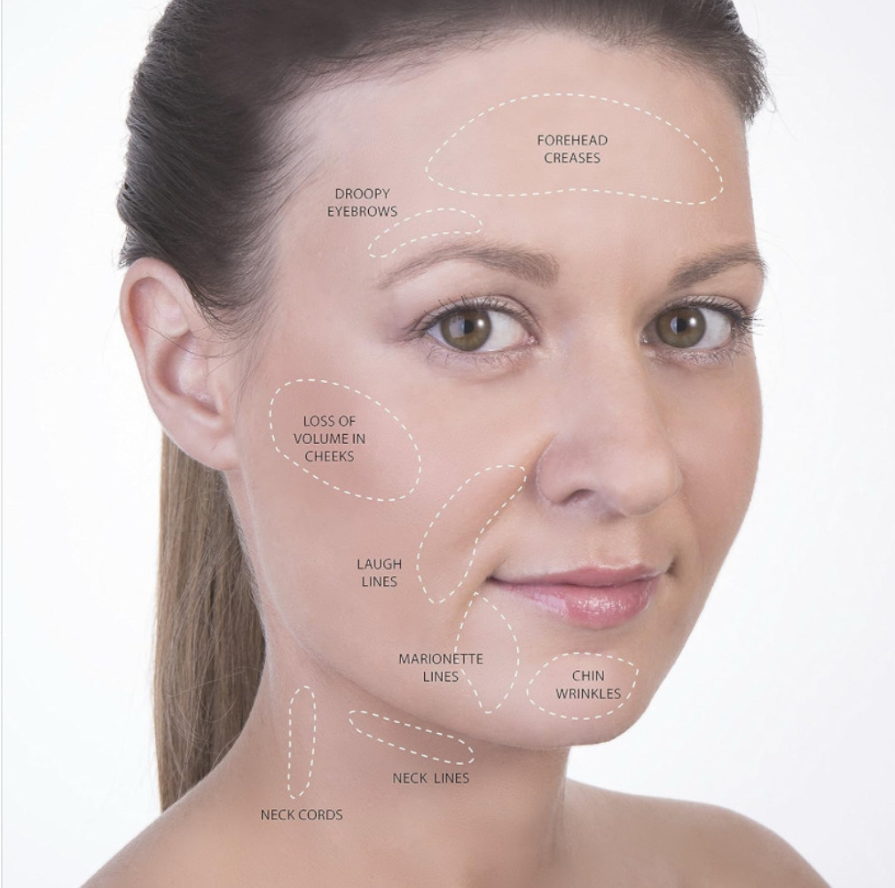

Facial Cupping
Facial and neck cupping with silicone cups. No cupping marks will be left on the patient. The provided benefits include ease of discomfort in head, neck & shoulders, as well as releif of headaches, sinus congestion, TMJ, fine lines, wrinkles and improved lymphatic flow.
March 2025
More info to follow
